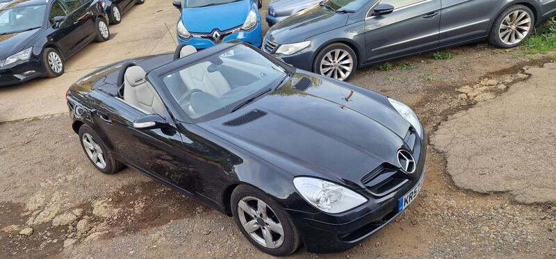
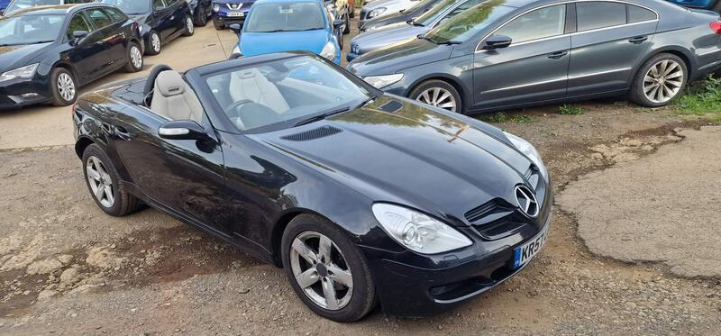
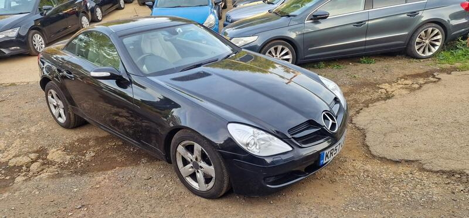
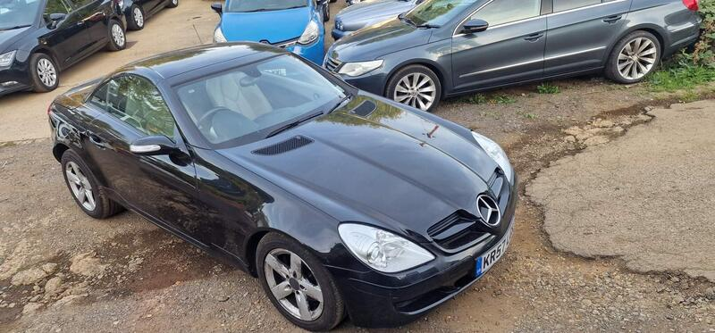

Seller photos from the AutoTrader ad.
Mercedes SLK 3.0 SLK280 7G-Tronic
A very cheap V6 SLK with huge miles. An honest ad; budget for the leak.
Key facts
| Price | £1,295 |
|---|---|
| Year | 2008 |
| Miles | 185,000 |
| Model | Mercedes SLK 3.0 SLK280 7G-Tronic |
| Colour | Black |
| Registration | 2008 (57 reg) |
| Owners | 2 owners |
| Service history | Not stated |
| MOT (AutoTrader ad) | 4 Feb 2027 (ad) |
| Seller | Trade |
| Location | Northampton |
| From GU7 | 72 mi (AutoTrader) |
| Listed on AutoTrader | 14/10/2026 |
| Checked | 15 October 2026 |
Why buy it
- 3.0 V6 auto for £1,295; 2 owners from new (ad)
- Last serviced 2025; new rear spring and brake shoes (ad)
- Hood 'worked fine', auto box and engine 'good' (ad)
Things to check
185,000 miles
Small oil leak and the radio doesn't work (ad)
Check the rear subframe, and that the Vario roof cycles in about 25–30 seconds
- Mercedes SLK R170/R171 weak spots
R171 (2004-11) galvanised and largely rust-free, but rear subframes corrode (MOT fails). R170 rusts badly – wings, arches, sills, screen pillars. Vario roof: hydraulic ram leaks, microswitches, should cycle in ~25-30s; M272 V6 balance-shaft gear on early cars; cracked exhaust Y-pipe; auto box wants oil changes.
Seller says (extract)
“Mot February 2027, comes with key, service history. Last service 2025. Hood worked fine. Auto box good. Engine good. Small oil leak. Radio does not work. Cheap slk. New rear spring and shoes. Price fix. Car is in Northampton postcode nn4 6bz This 2008 Mercedes-Benz SLK280 offers a refined driving experience, combining the classic styling of the SLK range with a powerful 3.0L petrol engine. With only two owners from new, this vehicle has been well maintained and presents a reliable option for those seeking a premium convertible. The combination of its established build quality and the specific SLK280 trim level ensures a balanced performance that remains relevant for modern driving. The vehicle distinguishes itself through a practical approach to the sports car segment, offering a surprisingly large boot space that makes it more versatile than many of its competitors. Drivers can enjoy impressive performance, with the car capable of accelerating from 0-60mph in 6.2 seconds, providing a responsive feel on the road. Furthermore, it sits in a low insurance group, which helps to make the ownership experience more accessible and cost-effective compared to other vehicles in its class.…”